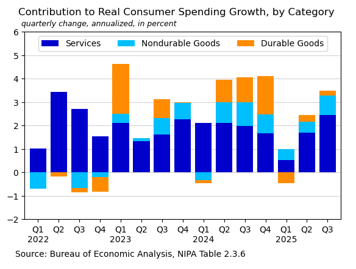
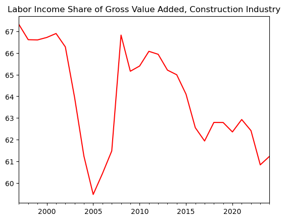

Bureau of Economic Analysis (BEA) API with Python
The BEA API provides access to national accounts data including GDP, consumer spending, and industry statistics. This tutorial demonstrates how to use Python to retrieve and analyze data from the BEA API.
This notebook offers two examples: the first fetches NIPA table data to calculate consumer spending growth by category, and the second shows how to navigate API metadata to find dataset parameters.
Background
BEA
The Bureau of Economic Analysis is part of the U.S. Department of Commerce. BEA produces the National Income and Product Accounts (NIPA)—the official GDP estimates and related tables that break down the economy by spending category, industry, and income type. You can read more about BEA here.
API Registration
To use the BEA API, you need to register for a free API key. The examples below assume the API key is stored in a separate config file (see the Getting Started guide for details).
Python
The examples use Python 3.x with the requests and pandas packages.
Example 1: Fetch NIPA Table
This example requests NIPA table 2.3.6, which breaks down real Personal Consumption Expenditures (PCE) by major product type: services, nondurable goods, and durable goods. PCE is the largest component of GDP, so understanding what's driving consumer spending growth is a common analytical task.
Import LibrariesIn[1]:
import requests
import pandas as pd
from config import bea_key as api_key # File with API keyThe requests library accepts a params dictionary that it encodes into the URL query string. This is cleaner than concatenating URL fragments by hand.
In[2]:
url = 'https://apps.bea.gov/api/data/'
params = {
'UserID': api_key,
'method': 'GetData',
'datasetname': 'NIPA',
'TableName': 'T20306', # Real PCE by Major Type of Product (Table 2.3.6)
'Frequency': 'Q',
'Year': ','.join(map(str, range(2021, 2026))),
'ResultFormat': 'json'
}
r = requests.get(url, params=params)The API returns JSON with one row per series per quarter. We parse it into a dataframe, clean the values (BEA includes commas in numbers), and pivot so each series code becomes a column.
In[3]:
# Parse API response into a dataframe
df = pd.DataFrame(r.json()['BEAAPI']['Results']['Data'])
df['Value'] = df.DataValue.str.replace(',', '').astype(float)
df['Date'] = pd.to_datetime(df.TimePeriod, format='mixed')
# Pivot so each series code is a column
data = df.set_index(['Date', 'SeriesCode'])['Value'].unstack()The series codes come from the table's column headers: DPCERX is total real PCE, DSERRX is services, DNDGRX is nondurable goods, and DDURRX is durable goods. You can find these codes in the API response's SeriesCode field or on the BEA interactive tables.
To understand what's driving consumer spending, we calculate how much each category contributed to the total growth rate. First, we annualize the quarterly growth rate—raising (1 + quarterly rate) to the 4th power converts it to an annual pace. Then, each category's contribution equals its share of the quarterly change times the total growth rate.
In[4]:
# Annualize quarterly growth: (1 + q/q rate)^4 - 1
pce_growth = (((data['DPCERX'].pct_change() + 1) ** 4) - 1) * 100
# Map series codes to readable names
categories = {
'DSERRX': 'Services',
'DNDGRX': 'Nondurable Goods',
'DDURRX': 'Durable Goods'
}
# Each category's share of the quarterly change × total growth rate
shares = data[categories].diff().div(data['DPCERX'].diff(), axis=0)
contributions = (shares.multiply(pce_growth, axis=0)
.dropna().loc['2022':]
.rename(categories, axis=1))
contributions.index.name = ''A stacked bar chart shows the contribution of each category to overall consumer spending growth.
In[5]:
# Create chart
ax = (contributions.plot(kind='bar', stacked=True, figsize=(6.7, 4),
rot=0, color=['mediumblue', 'deepskyblue', 'darkorange'],
width=0.8, zorder=3))
ax.legend(ncols=3, loc='upper center')
ax.set_ylim(-2, 6)
ax.axhline(0, lw=0.5, color='gray', zorder=0)
ax.grid(axis='y', zorder=0, color='lightgray')
ax.set_xticklabels([f'Q1\n{i.year}' if i.month == 1 else f'Q{(i.month+2)/3:.0f}'
for i in contributions.index])
title = 'Contribution to Real Consumer Spending Growth, by Category'
subtitle = 'quarterly change, annualized, in percent'
ax.text(-0.02, 1.09, title, transform=ax.transAxes, fontsize=12);
ax.text(-0.01, 1.03, subtitle, transform=ax.transAxes, fontsize=9, style='italic');
footer = 'Source: Bureau of Economic Analysis, NIPA Table 2.3.6'
ax.text(-0.03, -0.2, footer, transform=ax.transAxes, fontsize=10);Out[5]:

Example 2: Collect API Parameters
This example shows how to navigate API metadata to find dataset parameters. Using the metadata, we can discover the codes for tables and industries we want to request.
Fetch Table ListRequest the list of available tables in the GDPbyIndustry dataset. Table 25 (Composition of Gross Output) is what we want for this example.
In[6]:
url = 'https://apps.bea.gov/api/data/'
params = {
'UserID': api_key,
'method': 'GetParameterValues',
'DataSetName': 'GDPbyIndustry',
'ParameterName': 'TableID',
'ResultFormat': 'json'
}
r = requests.get(url, params=params)
# Show the results as a table
pd.DataFrame(r.json()['BEAAPI']['Results']['ParamValue']).set_index('Key').head()Out[6]:
| Desc | |
|---|---|
| Key | |
| 1 | Value Added by Industry (A) (Q) |
| 5 | Value added by Industry as a Percentage of Gross Domestic Product (A) (Q) |
| 6 | Components of Value Added by Industry (A) |
| 7 | Components of Value Added by Industry as a Percentage of Value Added (A) |
| 8 | Chain-Type Quantity Indexes for Value Added by Industry (A) (Q) |
Request the list of industry codes. Industry code 23 is the Construction industry.
In[7]:
# Reuse the same params, just change which parameter we're looking up
params['ParameterName'] = 'Industry'
r = requests.get(url, params=params).json()
# Show the results as a table
pd.DataFrame(r['BEAAPI']['Results']['ParamValue']).set_index('Key').head(10)Out[7]:
| Desc | |
|---|---|
| Key | |
| 11 | Agriculture, forestry, fishing, and hunting (A,Q) |
| 111CA | Farms (A,Q) |
| 113FF | Forestry, fishing, and related activities (A,Q) |
| 21 | Mining (A,Q) |
| 211 | Oil and gas extraction (A,Q) |
| 212 | Mining, except oil and gas (A,Q) |
| 213 | Support activities for mining (A,Q) |
| 22 | Utilities (A,Q) |
| 23 | Construction (A,Q) |
| 311FT | Food and beverage and tobacco products (A,Q) |
Using the parameters discovered above, fetch table 25 for industry 23 (Construction). The results are organized into a pandas dataframe.
In[8]:
# Now fetch actual data using the codes we discovered above
params = {
'UserID': api_key,
'method': 'GetData',
'DataSetName': 'GDPbyIndustry',
'TableId': 25, # Composition of Gross Output
'Industry': 23, # Construction
'Frequency': 'A',
'Year': 'ALL',
'ResultFormat': 'json'
}
r = requests.get(url, params=params)
df = pd.DataFrame(r.json()['BEAAPI']['Results'][0]['Data'])
df = df.replace('Construction', 'Gross Output')
df['DataValue'] = df['DataValue'].str.replace(',', '') # strip commas
df = df.set_index([pd.to_datetime(df['Year']),
'IndustrYDescription'])['DataValue'].unstack(1) # note: capital Y is a BEA quirk
df = df.apply(pd.to_numeric)
df.tail()Out[8]:
| Compensation of employees | Energy inputs | Gross Output | Gross operating surplus | Intermediate inputs | Materials inputs | Purchased-services inputs | Taxes less subsidies | Value added | |
|---|---|---|---|---|---|---|---|---|---|
| Year | |||||||||
| 2020 | 597.8 | 30.3 | 1804.4 | 415.3 | 845.7 | 636.6 | 178.8 | -54.4 | 958.7 |
| 2021 | 636.9 | 45.7 | 1985.6 | 400.8 | 973.5 | 749.7 | 178.1 | -25.6 | 1012.1 |
| 2022 | 694.3 | 50.9 | 2204.0 | 404.5 | 1091.6 | 840.5 | 200.3 | 13.6 | 1112.4 |
| 2023 | 745.0 | 51.0 | 2389.0 | 465.4 | 1164.5 | 854.9 | 258.6 | 14.1 | 1224.6 |
| 2024 | 799.3 | 45.4 | 2511.5 | 491.2 | 1206.1 | 869.9 | 290.7 | 14.9 | 1305.4 |
Create a chart showing the labor income share of gross value added in the construction industry.
In[9]:
# Labor income share of industry value added
data = (df['Compensation of employees'] / df['Value added']) * 100
data.index.name = ''
title = 'Labor Income Share of Gross Value Added, Construction Industry'
ax = data.plot(color='red', title=title);Out[9]:

Further Resources
- BEA API Documentation — endpoints, parameters, and usage guide
- Register for API Key — free registration required for all requests
- NIPA Handbook — methodology behind the national accounts tables
- BLS API Guide — employment and inflation data
- Census API Guide — manufacturing and trade data